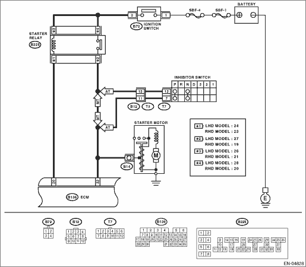

DTC DETECTING CONDITION:
Detected when two consecutive driving cycles with fault occur.
TROUBLE SYMPTOM:
Failure of engine to start
CAUTION:
After repairing or replacing the defective part, perform the Clear Memory Mode  and Inspection Mode .
and Inspection Mode .
WIRING DIAGRAM:


| STEP | CHECK | YES | NO |
|
Does the starter motor operate when ignition switch is turned to START? |
Repair the harness and connector. NOTE: In this case, repair the following item: • Open or ground short circuit of harness between ECM and starter motor connector • Poor contact in ECM connector |
Check the starter motor circuit. |